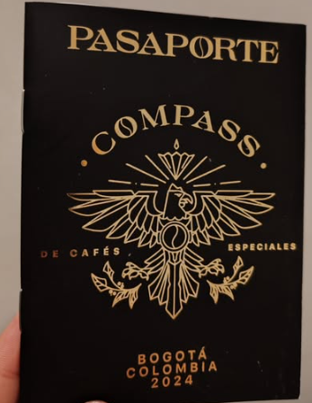
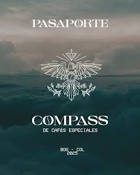

Home
Cafeterías
Ediciones
account_circle

Pasaporte Digital de Cafés Especiales (Edición 2024)
Estas son las cafeterías con el café más especial de Bogotá
Sigue Leyendo

Pasaporte Digital de Cafés Especiales (Edición 2025)
Estas son las cafeterías con el café más especial de Bogotá
Sigue Leyendo